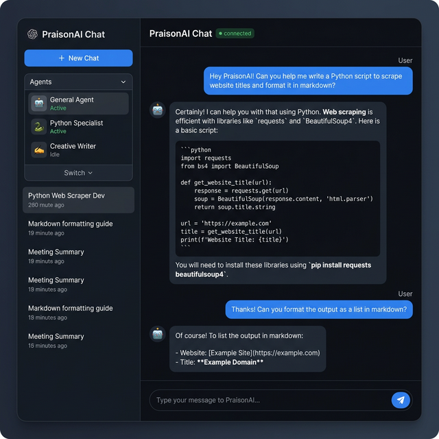
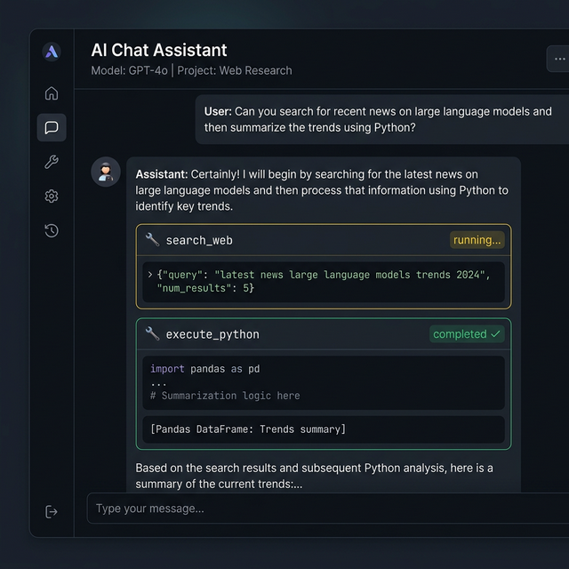

Gateway Chat¶
Real-time AI agent chat with WebSocket streaming, markdown rendering, tool call display, and session management.

Quick Start¶
import praisonaiui as aiui
from praisonaiui.server import create_app
aiui.set_style("dashboard")
app = create_app()
# Chat is auto-registered — just start the server
# Navigate to the dashboard and open the Chat page
How It Works¶
Full Streaming Data Flow¶
A chat message travels through 5 layers before reaching the browser:
sequenceDiagram
participant U as User (Browser)
participant JS as chat.js
participant WS as WebSocket /api/chat/ws
participant CM as ChatManager<br/>(chat.py)
participant PR as PraisonAIProvider<br/>(providers/__init__.py)
participant SDK as Agent.chat()<br/>(praisonaiagents)
U->>JS: User types message, hits Send
JS->>WS: {type: "chat", content: "Hello"}
WS->>CM: _run_and_broadcast(session_id, content)
CM->>PR: provider.run(content, session_id)
PR->>SDK: agent.chat(message, stream=True)
rect rgb(40, 40, 60)
note over SDK,JS: Streaming Phase
SDK-->>PR: StreamEvent (DELTA_TEXT tokens)
PR-->>CM: RunEvent(RUN_CONTENT, token="...")
CM-->>WS: broadcast({type: "run_content", token: "..."})
JS->>JS: appendDelta(token) — accumulate in single DOM element
SDK-->>PR: StreamEvent (TOOL_CALL_START)
PR-->>CM: RunEvent(TOOL_CALL_STARTED, name, args)
CM->>CM: Dedup + enrich (icon, description, step_number)
CM-->>WS: broadcast({type: "tool_call_started", ...enriched})
JS->>JS: appendToolCall(data, 'running') — collapsible card
SDK-->>PR: StreamEvent (TOOL_CALL_END + result)
PR-->>CM: RunEvent(TOOL_CALL_COMPLETED, result)
CM->>CM: Merge result into collected_tool_calls
CM-->>WS: broadcast({type: "tool_call_completed", ...enriched})
JS->>JS: updateToolCall(data, 'done') — show ✓ + result
SDK-->>PR: StreamEvent (STREAM_END)
PR-->>CM: RunEvent(RUN_COMPLETED, content=str(response))
CM-->>WS: broadcast({type: "run_completed", content: "..."})
JS->>JS: finalizeDelta(content) — replace streaming text with final
end
rect rgb(40, 50, 40)
note over CM: Persistence Phase
CM->>CM: Save to datastore: {role, content, toolCalls}
endKey Files¶
| File | Layer | Responsibility |
|---|---|---|
aiui/plugins/views/chat.js |
Frontend | WS connection, DOM rendering, session history |
src/praisonaiui/features/chat.py |
Backend | ChatManager, _run_and_broadcast, history API |
src/praisonaiui/server.py |
Backend | SSE streaming path (run_agent endpoint) |
src/praisonaiui/providers/__init__.py |
Provider | SDK → RunEvent bridge, _run_direct_mode |
src/praisonaiui/datastore.py |
Storage | MemoryDataStore / JSONFileDataStore |
src/praisonaiui/provider.py |
Protocol | RunEventType enum definition |
Architecture¶
graph TD
A["ChatProtocol (ABC)"] --> B["ChatManager (Default)"]
B --> C["send_message()"]
B --> D["get_history()"]
B --> E["abort_run()"]
B --> F["broadcast()"]
G["PraisonAIChat (Feature)"] --> H["4 API Routes"]
H --> I["POST /api/chat/send"]
H --> J["GET /api/chat/history/{session_id}"]
H --> K["POST /api/chat/abort"]
H --> L["WS /api/chat/ws"]Agent Tool Resolution¶
Agents created via YAML config, CRUD API, jobs, or channel bots automatically get tools resolved through the ToolResolver. Tool names in config are resolved to callable Python functions from 4 sources:
- Local
tools.pyfile (backward compatibility) praisonaiagents.tools.TOOL_MAPPINGS(built-in tools)praisonai_toolspackage (community tools)- Tool registry (programmatically registered tools)
YAML Configuration¶
# ~/.praisonaiui/config.yaml (unified runtime config)
agents:
researcher:
instructions: "Research topics thoroughly."
model: gpt-4o-mini
tools:
- internet_search # Resolved to callable function
- wikipedia_search
reflection: true # Enable self-reflection (default: true)
role: "Senior Researcher" # Optional CrewAI-style params
goal: "Find accurate info"
backstory: "Expert researcher"
CRUD API¶
Agents created via POST /api/agents also support tools:
{
"name": "researcher",
"instructions": "Research topics thoroughly.",
"model": "gpt-4o-mini",
"tools": ["internet_search"],
"reflection": true
}
Where Tool Resolution Applies¶
| Component | Tool Resolution |
|---|---|
Gateway _create_agents_from_config() |
✅ ToolResolver |
Integration create_gateway_from_yaml() |
✅ ToolResolver |
Provider _get_or_create_agent() |
✅ Default tools |
Channel bot _start_channel_bot() |
✅ Default tools |
Jobs _execute_job() fallback |
✅ ToolResolver |
CRUD agents _run() fallback |
✅ ToolResolver |
CRUD agents _sync_to_gateway() |
✅ ToolResolver |
Features¶
Markdown Rendering¶
Assistant messages are rendered with full markdown support:
- Bold, italic, ~~strikethrough~~
- Inline
codeand fenced code blocks with syntax highlighting - Ordered and unordered lists
- Links (auto-detected and rendered safely)
Tool Call Display¶

When agents use tools, each call is displayed as a collapsible card:
- Tool name and status indicator (running/completed/failed)
- Input arguments (JSON)
- Output results (rendered in code blocks)
Tool Call Lifecycle¶
Tool calls go through 4 stages: emit → enrich → dedup → persist.
1. Emit — The SDK fires TOOL_CALL_START / DELTA_TOOL_CALL / TOOL_CALL_END events via StreamEventEmitter. The provider maps these to RunEvent types (TOOL_CALL_STARTED, TOOL_CALL_COMPLETED).
2. Enrich — _run_and_broadcast() in chat.py enriches each tool call event with display-friendly fields via _enrich_tool_payload():
| Field | Source | Example |
|---|---|---|
icon |
Mapped from tool name | 🔍, 📝, 💾 |
description |
Generated from name + args | "🔍 Searching for 'Django latest version'" |
step_number |
Auto-incrementing counter per run | 1, 2, 3 |
formatted_result |
Truncated result string | "✓ Done" |
tool_call_id |
SDK-assigned or UUID fallback | "call_abc123" |
3. Dedup — Both DELTA_TOOL_CALL (stream) and hook callbacks fire for the same tool call. The handler uses _seen_tool_started / _seen_tool_completed sets keyed by tool_call_id and name to suppress duplicates. A re-broadcast with has_complete_args=True is allowed to update the description with keyword-rich text.
4. Persist — After the run completes, all enriched tool calls are merged by tool_call_id into collected_tool_calls and saved alongside the assistant message:
msg_data = {
"role": "assistant",
"content": full_response,
}
if collected_tool_calls:
msg_data["toolCalls"] = list(collected_tool_calls.values())
await _datastore.add_message(session_id, msg_data)
Tool Call Persistence Schema¶
Tool calls are persisted alongside assistant messages in the datastore. When a session is reloaded from history, tool call steps are reconstructed from the toolCalls array on each assistant message.
Assistant message schema in the datastore:
{
"role": "assistant",
"content": "Final response text",
"toolCalls": [
{
"name": "search_web",
"description": "🔍 Searching for 'Django latest version'",
"icon": "🔍",
"step_number": 1,
"args": {"query": "Django latest version"},
"result": "...",
"formatted_result": "✓ Done",
"status": "done",
"tool_call_id": "tc_abc123",
"type": "tool_call_completed"
}
]
}
History Reload Rendering¶
sequenceDiagram
participant Browser as chat.js
participant API as GET /api/chat/history/{id}
participant DS as DataStore
Browser->>API: fetch('/api/chat/history/' + sessionId)
API->>DS: get_messages(session_id)
DS-->>API: messages (with toolCalls on assistant msgs)
API-->>Browser: {messages: [...]}
loop forEach message
alt role == assistant
Browser->>Browser: appendMessage('assistant', content)
loop forEach toolCalls[]
Browser->>Browser: appendToolCall(tc)
Browser->>Browser: updateToolCall(tc, result)
end
else role == user
Browser->>Browser: appendMessage('user', content)
end
endSession Management¶
- New Session: Click "New Chat" to create a fresh session
- Session History: Switch between sessions in the sidebar
- Message History: Full conversation history per session via REST API
Message Abort¶
- Click the Stop button (or send
chat_abortvia WebSocket) to cancel an in-progress agent run - The partial response is preserved in history
File Attachments¶
Upload files to include with your chat messages — see Attachments for details.
Session Persistence¶
Chat history is persisted via the BaseDataStore interface (datastore.py). Two implementations are available:
| DataStore | Persistence | Default |
|---|---|---|
MemoryDataStore |
Volatile (in-memory only) | Yes (fallback) |
JSONFileDataStore |
Disk (~/.praisonaiui/sessions/) |
Yes (when data_dir configured) |
Each session is a JSON file containing:
{
"id": "session-uuid",
"title": "Auto-generated from first user message",
"created_at": "2026-03-17T08:00:00Z",
"updated_at": "2026-03-17T08:01:00Z",
"messages": [
{"role": "user", "content": "..."},
{"role": "assistant", "content": "...", "toolCalls": [...]}
]
}
Messages are appended via add_message() and retrieved via get_messages(). Both methods are async to support future database backends.
Response Content Strategy¶
The content field on assistant messages stores the SDK's final response from agent.chat() — the same text displayed by finalizeDelta() in the live view. This ensures the reloaded view matches what the user saw during streaming.
[!IMPORTANT] During streaming, text tokens are accumulated in
full_response. However, whenRUN_COMPLETEDarrives withevent.content(the SDK's authoritative return value), it replaces the accumulated tokens for storage. This prevents intermediate narrative text from being duplicated on reload.
Chat Message Model¶
@dataclass
class ChatMessage:
role: str # "user" | "assistant" | "system"
content: str # Message text
session_id: str # Session identifier
message_id: str # Auto-generated UUID
agent_name: str # Optional agent name
timestamp: float # Unix timestamp
metadata: Dict # Optional metadata (tool calls, etc.)
WebSocket Protocol¶
Client → Server¶
// Send a message
{"type": "chat", "content": "Hello!", "session_id": "abc-123"}
// Abort a run
{"type": "chat_abort", "session_id": "abc-123"}
// Keepalive ping
{"type": "ping"}
Server → Client¶
All events include session_id and run_id.
// Streaming text token
{"type": "run_content", "token": "Hello", "session_id": "...", "run_id": "..."}
// Tool call started (enriched)
{
"type": "tool_call_started",
"name": "search_web",
"tool_call_id": "call_abc123",
"args": {"query": "Django"},
"description": "🔍 Searching for 'Django'",
"icon": "🔍",
"step_number": 1
}
// Tool call completed (enriched)
{
"type": "tool_call_completed",
"tool_call_id": "call_abc123",
"name": "search_web",
"result": "Django 5.1 released...",
"formatted_result": "✓ Done",
"status": "done"
}
// Intermediate LLM narrative text (between tool calls)
{"type": "llm_content", "content": "Let me search for that..."}
// Reasoning step (thinking)
{"type": "reasoning_step", "step": "Analyzing the query..."}
// Agent asks for user input
{"type": "run_paused", "question": "Which version?", "options": ["5.0", "5.1"]}
// Memory updates
{"type": "memory_update_started"}
{"type": "updating_memory"}
{"type": "memory_update_completed"}
// Run completed (content = SDK's final response)
{"type": "run_completed", "content": "Here are the results..."}
// Error / Cancel
{"type": "run_error", "error": "..."}
{"type": "run_cancelled"}
// Team variants (multi-agent)
{"type": "team_run_started", "agent_name": "researcher"}
{"type": "team_run_content", "token": "..."}
{"type": "team_tool_call_started", ...}
{"type": "team_tool_call_completed", ...}
{"type": "team_run_completed", "content": "..."}
// Channel bot messages
{"type": "channel_message", "platform": "slack", "sender": "User", "content": "..."}
{"type": "channel_response", "platform": "slack", "content": "..."}
// Keepalive
{"type": "pong"}
REST API¶
| Endpoint | Method | Description |
|---|---|---|
/api/chat/send |
POST | Send a message (non-streaming) |
/api/chat/history/{session_id} |
GET | Get message history for a session |
/api/chat/abort |
POST | Abort an active run |
/api/chat/ws |
WebSocket | Real-time chat streaming |
Send Message¶
curl -X POST http://localhost:8083/api/chat/send \
-H "Content-Type: application/json" \
-d '{"content": "Hello!", "session_id": "my-session"}'
Get History¶
Response includes toolCalls on assistant messages:
```json { "messages": [ {"role": "user", "content": "Search for Django"}, { "role": "assistant", "content": "Here are the results...", "toolCalls": [ { "name": "search_web", "description": "🔍 Searching for 'Django'", "step_number": 1, "status": "done", "result": "..." } ] } ] }
Frontend (chat.js)¶
The chat frontend is a vanilla JavaScript plugin that auto-loads as a dashboard page. Two versions exist:
| Version | Path | Notes |
|---|---|---|
| Plugin | aiui/plugins/views/chat.js |
Used in development |
| Template | src/praisonaiui/templates/frontend/plugins/views/chat.js |
Bundled with package, has enriched UI |
Core Functions¶
| Function | Purpose |
|---|---|
connectWebSocket() |
Establish WS with auto-reconnect (3s delay) |
handleWsMessage(data) |
Event dispatch — routes to rendering functions |
appendMessage(role, content, agentName) |
Render a complete message (history load) |
appendDelta(token, agentName) |
Streaming — append token to currentDeltaEl |
finalizeDelta(content, agentName) |
End streaming — replace with final content |
appendToolCall(name/data, args/status) |
Render tool call card |
updateToolCall(name/data, result, status) |
Update card with result |
appendReasoning(step) |
Render thinking step |
appendAskWidget(question, options) |
Render user-input prompt |
appendMemoryIndicator(text) |
Show memory update spinner |
loadSession(sessionId) |
Fetch history → render messages + tool calls |
restoreSessionHistory(sessionId) |
Same as above, on WS reconnect |
renderMarkdown(text) |
Custom zero-dependency markdown renderer |
escapeHtml(str) |
XSS prevention sanitizer |
Streaming Text Model¶
During streaming, all text tokens go into a single currentDeltaEl DOM element — even across tool call boundaries. Tool call cards are sibling elements inserted alongside the text element. When run_completed arrives, finalizeDelta(content) replaces the accumulated text with the SDK's final response.
Theming¶
The chat UI supports dark and light themes via CSS custom properties — see Theme System.
Related¶
- Attachments — File uploads in chat
- Theme System — Dark/light mode
- Protocol Versioning — WebSocket protocol negotiation
- Subagent Tree — Agent hierarchy visualization